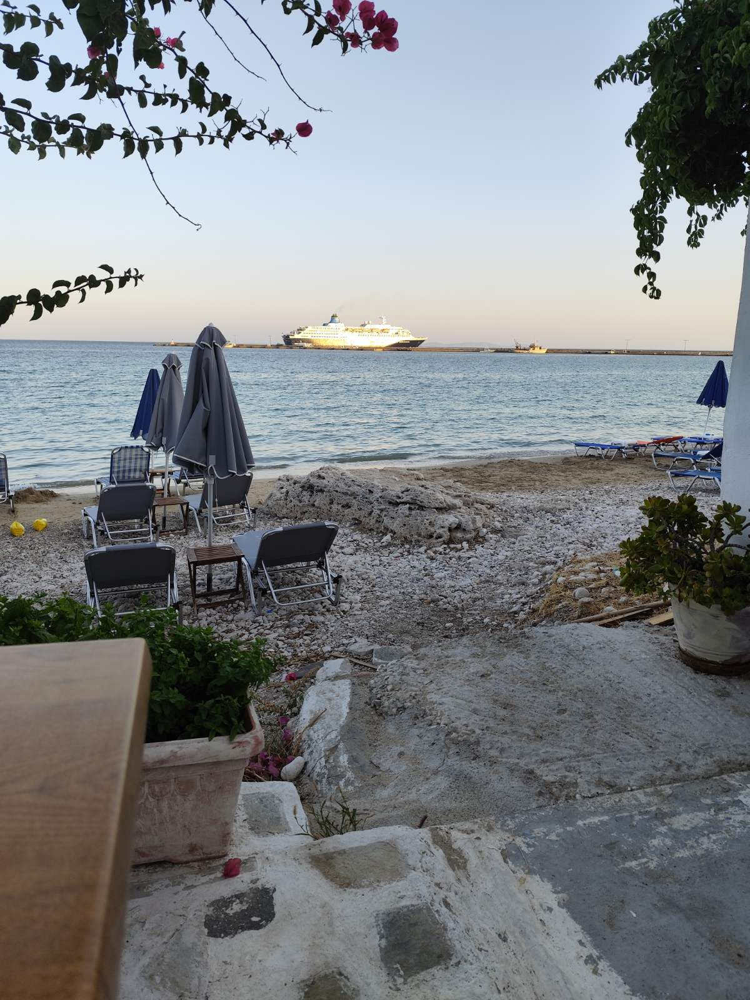

Samos Island
Samos is a Greek island in the eastern Aegean Sea.
Samos is a Greek island in the eastern Aegean Sea, south of Chios, north of Patmos and the Dodecanese archipelago, and off the coast of western Turkey, from which it is separated by the 1.6-kilometre-wide (1.0 mi) Mycale Strait. It is also a separate regional unit of the North Aegean region.
Ancient times
In ancient times, Samos was an especially rich and powerful city-state, particularly known for its vineyards and wine production. It is home to Pythagoreion and the Heraion of Samos, a UNESCO World Heritage Site that includes the Eupalinian aqueduct, a marvel of ancient engineering. Samos is the birthplace of the Greek philosopher and mathematician Pythagoras, after whom the Pythagorean theorem is named, the philosophers Melissus of Samos and Epicurus, and the astronomer Aristarchus of Samos, the first known individual to propose that the Earth revolves around the Sun. Samian wine was well known in antiquity and is still produced on the island. The island was governed by the semi-autonomous Principality of Samos under Ottoman suzerainty from 1835 until it joined Greece in March 1913.
Climate
Samos has a hot-summer Mediterranean climate, with mild, rainy winters and hot, dry summers. The highest temperature ever recorded is 43.0 °C (109.4 °F) while the lowest is −3.4 °C (25.9 °F). July is the hottest and driest month followed by August while February is the coldest month and December records the highest amount of precipitation. Samos receives about 705 millimetres (27.8 in) of rainfall annually while the average annual temperature is 18.4 °C (65.1 °F). Humidity is lowest during the summer and highest at the end of autumn.
Ref.:WIKIPEDIA
Perfect destination
Want to spend your summer holiday period swimming in blue crystal waters, enjoy nature and taste Greek traditional food? Consider...